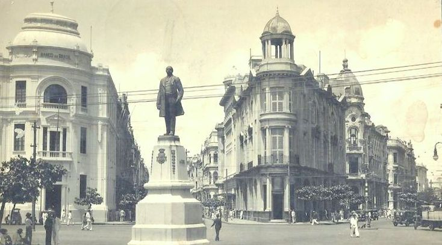
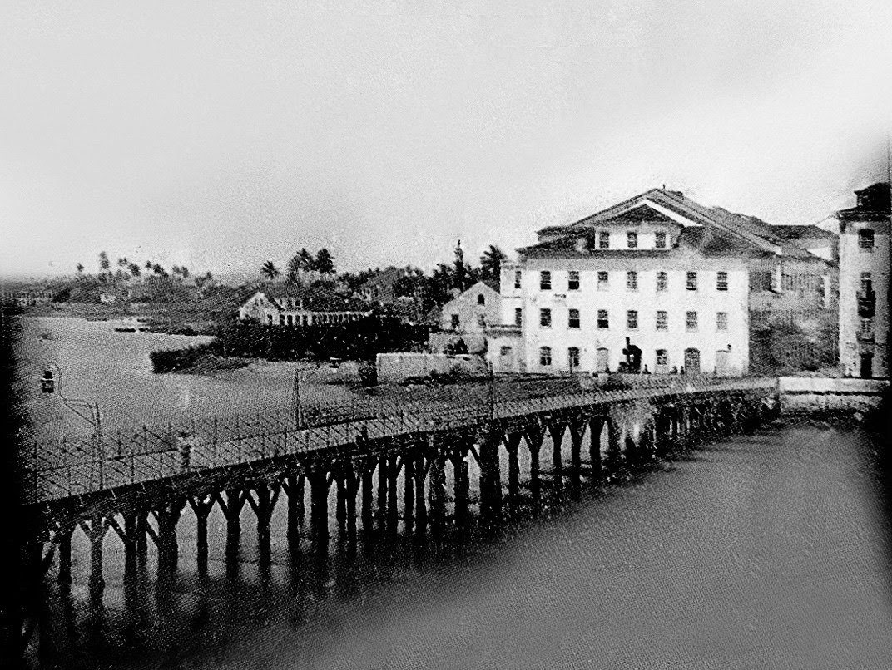

A antiga Recife, fundada em 1537, é um tesouro histórico que reflete séculos de influências coloniais. Suas ruas de paralelepípedos e casarões preservam a arquitetura portuguesa e holandesa, testemunhando um passado rico e diversificado. O comércio de açúcar impulsionou a cidade, atraindo diferentes culturas e contribuindo para sua vitalidade. Hoje, a antiga Recife é um mosaico de memórias, onde cada rua conta uma parte valiosa da história dessa cidade que soube preservar sua identidade ao longo do tempo.
 